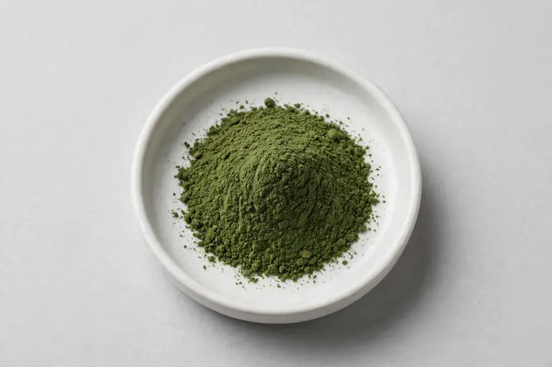

Rocket leaf — emerging botanical extract for nutricosmetic and beauty-from-within formulations.

Overview
Rocket leaf extract is derived from the leaf of Eruca sativa and has emerged as an ingredient of interest in nutricosmetics and hair-health oriented formulations, where it is positioned around glucosinolate content. Buyers in the beauty-from-within space often request it for capsule and powder formats alongside other botanical actives. Specification interest centers on glucosinolate level and the analytical method used to report it. We source through vetted partner producers and confirm feasibility honestly before you commit.
Specifications below reflect commonly requested options in the market — not a stock list. Share your target spec and we'll confirm exactly what we can supply, honestly.
| Specification | Details |
|---|---|
| Botanical identity | Rocket leaf extract powder |
| Source material | Leaf |
| Marker compound | Commonly requested spec grades: glucosinolate content, method and reference standard agreed per buyer |
| Appearance | Medium to dark green fine powder |
| Analytical methods | Methods referenced in buyer specifications: HPLC |
| Mesh size | Typically 80–100 mesh (confirm per inquiry) |
| Testing | COA/TDS arranged on request; scope agreed per your spec |
Applications
Documentation
We don't claim in-house labs or certifications we don't hold. COA and TDS documents can be arranged on request, and testing scope is agreed against your specification before supply.
FAQ
Related products
L-Citrulline
Key marker: 99%+
View specs →Bromelain (Ananas comosus)
Key marker: 2000-3000 GDU/g
View specs →Papain (Carica papaya)
Key marker: USP activity units
View specs →Pisum sativum
Key marker: Protein 80-85%
View specs →Cocos nucifera
Key marker: Potassium
View specs →Send your target spec and volumes — we'll respond with a tailored quotation.
Request a Quote